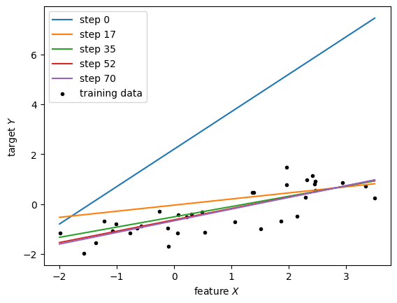
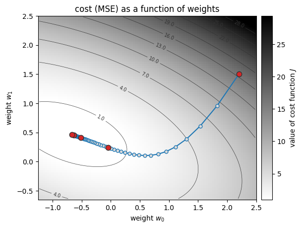

12.5 A Worked Example of Simple Linear Regression
(More information and step by step explanations are given in section 12.5 of the MDS book).
12.5.1 Python Implementation
We start by initialization of the random number generator and creating the training dataset where the feature X is superimposed with random noise. The target values Y are a linear function of the feature X and additionally also superimposed with random noise.
rng = np.random.default_rng()
xlim = np.array((-2., 3.5)) # min. and max. x-values
n_total_data = 50 # number of data points
slope, offset = 0.5, -0.7
X = xlim[0] + rng.random(size=n_total_data) * (xlim[1] - xlim[0])
eps_noise = 0.5 * rng.standard_normal(n_total_data)
y = offset + slope * X + eps_noise
X_train, y_train, X_test, y_test = train_test_split(X, y, fraction=0.7)Show the data and the true function:

As a next step, we can now define a function that returns the two components of the gradient of the cost function, Eq. (12.32) and Eq. (12.33):
Similarly, we also implement a function for computing the MSE cost:
Define a few numerical parameter and the initial guess for the values of the two weights:
We can now perform the update scheme where a maximum of maximum_number_of_steps update steps are allowed in the for loop (observe that the else clause has the same level of indentation as the for statement – it is not an IF-ELSE but a FOR-ELSE!!).
weights = initial_weights.copy()
for nstep in range(maximum_number_of_steps):
delta_w = step_size * (-gradient_of_cost(weights, X_train, y_train))
weights += delta_w
if np.linalg.norm(delta_w) < tolerance:
print(f"converged after {nstep} steps")
break
else:
print("ERROR: maximum number of iterations exceeded")converged after 70 stepsMind the trickiness of “=”:
In the first line we had to copy the initial weights. Without this, weights is a reference, i.e., it is just another name for the same chunk of memory; without copying initial_weights would get updated in the for loop and would have the same value as weights in the end. The same also holds for the elements of all_cost_values.
We summarize a few results:
w0 = -0.672, w1 = 0.468
71 steps taken
final cost J: 0.2808Note that these results are slightly different than those recorded in chapter 12 of the book. The reason is that the training dataset was randomly sampled.
12.5.2 Visualization and Discussion of Training Results
In the following we visualize how the regression line and the cost changes as the weights are being updated in the steepest descent method:
weights = initial_weights.copy()
# initialize the lists that keep track of the changes
all_weight_values = [initial_weights.copy()]
all_cost_values = [cost(all_weight_values[-1], X_train, y_train)]
for n_iter in range(maximum_number_of_steps):
delta_w = step_size * (-gradient_of_cost(weights, X_train, y_train))
weights += delta_w
# store changes
all_weight_values.append(weights.copy())
all_cost_values.append(cost(weights, X_train, y_train))
if np.linalg.norm(delta_w) < tolerance:
print(f"converged after {n_iter} steps")
break
else:
print("ERROR: maximum number of iterations exceeded")
all_weight_values = np.array(all_weight_values)
all_cost_values = np.array(all_cost_values)converged after 70 stepsShow how the line’s position and inclination changes during the cost minimization:
fig, ax = plt.subplots()
# 5 equidistant plot steps ('//' is an integer division)
# n_iter is the variable from the for loop above
plot_steps = [n * n_iter // 4 for n in range(5)]
for n in plot_steps:
w0, w1 = all_weight_values[n]
ax.plot(xlim, w0 + w1 * xlim, ls='-', label=f'step {n}')
ax.scatter(X_train, y_train, marker='.', c='k', label='training data')
ax.set(xlabel="feature $X$", ylabel="target $Y$")
ax.legend();
Next, we create a heatmap plot that visualizes the cost values as a function of the two weights. Additionally, plot the trajectory of the weight values during the steepest descent iterations. The first step is to prepare the 2D data.
The “catch” about heatmaps and contourlines : Creating a 2D heatmap along with contour lines in Matplotlib requires careful alignment of the grid points used by the heatmap and the contour plot. E.g., the imshow function places the origin at the top left by default and centers pixels at integer coordinates, while contour assumes that the grid points are located at the corners of the cells. To align them correctly, we need to ensure that both are using the same coordinate system.
We’ll use pcolormesh for the heatmap because it allows us to specify the edges of the grid cells (the coordinates of the corners of quadrilaterals of a pcolormesh) explicitly. Specifying the parameter shading=‘flat’ indicates that the color of the quadrilateral is given from the value at the center of the cell. The contour plot inherently assumes the data points are at the grid corners.
# define the range of the points in the weight space
w0_range = (-1.25, 2.5)
w1_range = (-0.65, 2.5)
# compute the edge coordinates of the quadrilaterals of the grid
xe = np.linspace(*w0_range, 100)
ye = np.linspace(*w1_range, 100)
# compute the center points of the grid rectangles for evaluating the cost function
dx = xe[1] - xe[0] # width of a
dy = ye[1] - ye[0]
xc = xe[:-1] + dx / 2
yc = ye[:-1] + dy / 2
# evaluate cost function at cell centers
X, Y = np.meshgrid(xc, yc)
Z = np.empty_like(X)
for col, w0 in enumerate(xc):
for row, w1 in enumerate(yc):
Z[row, col] = cost(np.array([w0, w1]), X_train, y_train)from mpl_toolkits.axes_grid1 import make_axes_locatable
fig, ax = plt.subplots()
# plot the 2D heatmap with contour lines
im = ax.pcolormesh(xe, ye, Z, cmap='gray_r', vmin=1, vmax=0.9*Z.max(), shading='flat')
cs = ax.contour(X, Y, Z, np.arange(1, 30, 3), colors='0.2', linewidths=0.5)
ax.clabel(cs, cs.levels, inline=True, fmt=lambda x: f"{x:.1f}", fontsize='x-small')
ax.set(aspect='equal', xlabel='weight $w_0$', ylabel='weight $w_1$', title='cost (MSE) as a function of weights')
# add colorbar
divider = make_axes_locatable(ax)
cax = divider.append_axes("right", size="5%", pad=0.1)
plt.colorbar(im, cax=cax)
cax.set(ylabel='value of cost function $J$')
# plot the trajectory during weights optimization
ax.plot(all_weight_values[:, 0], all_weight_values[:, 1], '-', c='C0')
ax.plot(all_weight_values[:, 0], all_weight_values[:, 1], '.', ms=10, c='C0', mfc='0.85')
# highlight the weights for which we showed the regression lines above:
for n in plot_steps:
ax.plot(all_weight_values[n, 0], all_weight_values[n, 1], '.', ms=15, c='0.2', mfc='C3')
12.5.3 Validation of the Trained Model
During each iteration step of the steepest descent method the weight values are updated. This is done based on the training dataset. To evaluate the performance of this model on new and unseen data we compute the cost for the testing dataset using these weight values. This can be done by mainly reusing the above code and adding a second list that keeps track of the model performance based on the testing data (test_cost):
xlim = np.array((-2., 3.5)) # min. and max. x-values
n_total_data = 50 # number of data points
slope, offset = 0.5, -0.7 # parameter of the true curve
rng = np.random.default_rng()
X = xlim[0] + rng.random(size=n_total_data) * (xlim[1] - xlim[0])
eps_noise = 0.5 * rng.standard_normal(n_total_data)
y = offset + slope * X + eps_noise
X_train, y_train, X_test, y_test = train_test_split(X, y, fraction=0.7)# initialize the lists that keep track of the changes
all_weights = [initial_weights.copy()]
train_cost = [cost(all_weights[-1], X_train, y_train)]
test_cost = [cost(all_weights[-1], X_test, y_test)]
for n_iter in range(maximum_number_of_steps):
delta_w = step_size * (-gradient_of_cost(all_weights[-1], X_train, y_train))
all_weights.append(all_weights[-1] + delta_w)
train_cost.append(cost(all_weights[-1], X_train, y_train))
test_cost.append(cost(all_weights[-1], X_test, y_test))
if np.linalg.norm(delta_w) < tolerance:
print(f"converged after {n_iter} steps")
break
else:
print("ERROR: maximum number of iterations exceeded")converged after 79 stepsFor visualization, we plot the cost values as a function of the number of iteration steps. Since the differences between training and testing MSE \(J\) are not very large but the absolute values of \(J\) change significantly, we use a logarithmic scaling of the vertical axis:
[Text(0.5, 0, 'number of steps taken'),
Text(0, 0.5, 'value of cost function $J$ (MSE)')]
Try this out by creating new training/testing data several times. You will observe that sometimes the testing MSE is below and sometimes it is above the training MSE.